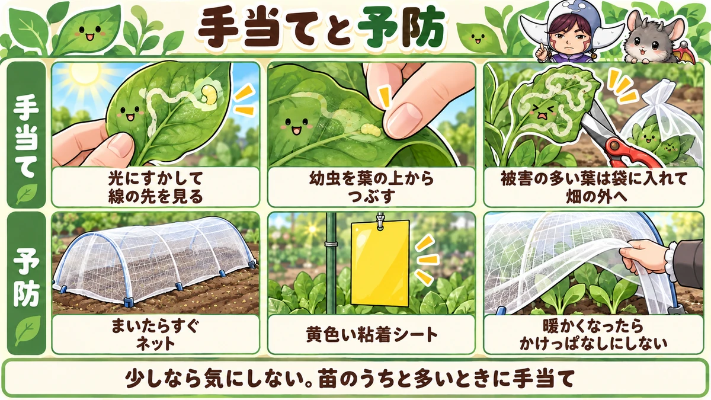

ハモグリバエ（絵かき虫）対策の決定版｜葉の白いくねくね線の正体と、白くなる症状の見分け方
📖 この記事の目次
この記事で分かること
- 葉に、白い線がくねくねと曲がりながら広がっているのは、ハモグリバエという小さなハエの幼虫が、葉の中にもぐりこんで食べ進んだあとです。筆で落書きしたように見えるので「絵かき虫」とも呼ばれます。
- 病気ではありません。殺菌剤や、病気のための手作りの液をかけても効きません。
- トマト、きゅうり、すいか、スナップエンドウ、グリンピース、いんげん、白菜、ほうれん草、ねぎなど、多くの野菜に出ます。特に、春のえんどう類によく出ます。
- 数本の線なら、ほとんど気にしなくて大丈夫です。苗のうちや、葉が真っ白になるほど多い場合は、手当てをします。
- 手当ては、線の先にいる幼虫を葉の上から指でつぶす、被害の多い葉を取る、が基本です。予防には、防虫ネットや、黄色い粘着シートが役立ちます。
スナップエンドウの葉に、白いくねくねした線がたくさん入っている。トマトの葉にも、地図を描いたような白い模様が広がってきた。病気がうつったのかと心配になり、何かをかけたほうがいいのかと迷う人も多いでしょう。
この白い線の正体は、ハモグリバエという、とても小さなハエの幼虫です。この記事では、ハモグリバエの見分け方から、出やすい野菜と時期、どこまで気にすればよいか、薬を使わない手当てと予防まで、順番に書いていきます。
早見：ハモグリバエ
- 正体：体長2mmほどの小さなハエ。幼虫が葉の中にもぐって食べる
- 症状：葉に白い線が、くねくねと曲がりながら伸びる。線の先が少し太くなっている
- 出やすい野菜：スナップエンドウ、グリンピース、さやえんどう、トマト、きゅうり、すいか、いんげん、白菜、ほうれん草、ねぎ、レタスなど
- 出やすい時期：春から初夏（特に3月後半〜5月のえんどう類）、秋（8〜10月）
- どこまで気にするか：数本なら気にしなくてよい。苗のうちや、葉が真っ白になるほどなら手当てをする
- 手当て：線の先の幼虫を葉の上からつぶす。被害の多い葉を取る
- 予防：防虫ネット、黄色い粘着シート、まわりの草の整理

見分けるための観察のしかた
1. 白い部分の形を見る
線か、点か、粉か、まだらか、を見ます。線ならハモグリバエ、細かい点ならハダニ、粉ならうどんこ病、まだらならウイルス病の可能性が高くなります。
2. 指でこすってみる
指でこすって粉がつけば、うどんこ病などのかびです。粉がつかなければ、虫や、葉の中の傷みです。
3. 光にすかす
葉を空にかざして光にすかすと、葉の中にいるハモグリバエの幼虫や、食べられて空っぽになった部分がよく見えます。
4. 葉の裏を見る
ハダニやアザミウマ、白さび病のいぼ、べと病のかびは、葉の裏に出ることが多いので、必ず裏返して見ます。
5. 虫めがねやスマートフォンで拡大する
小さな虫や幼虫は、肉眼では見分けにくいことがあります。虫めがねや、スマートフォンのカメラで拡大すると、よく分かります。写真を撮っておくと、あとで調べたり、比べたりするのにも役立ちます。
ハモグリバエを知る
どんな虫か
ハモグリバエは、体長2mmほどの、とても小さなハエのなかまです。成虫は黒っぽい体に黄色い模様があり、葉の上をちょこちょこと歩き回ったり、飛び回ったりしています。成虫は、葉の表面に小さな傷をつけて、その中に卵を産みます。
幼虫が葉の中を食べ進む
卵からかえった幼虫は、葉の表と裏の皮のあいだにもぐりこみ、中の緑色の部分を食べながら進んでいきます。食べられたところは中身がなくなって白くすけて見えるので、葉の表面に白い線が描かれたようになります。幼虫が育つにつれて線は太くなり、線の先に幼虫がいます。
「絵かき虫」と呼ばれるわけ
葉の上に、白い線で落書きをしたような模様が残るので、昔から「絵かき虫」と呼ばれてきました。線の形は、幼虫がどの向きに食べ進んだかによってさまざまで、1枚の葉に何本もの線が重なると、本当に地図を描いたように見えます。
さなぎになる場所
育ちきった幼虫は、葉の中や、葉から出て地面に落ちて、さなぎになります。葉の裏を見ると、茶色っぽい小さなつぶ（さなぎ）が、点々と見えることがあります。さなぎから成虫が出てきて、また葉に卵を産みます。
成虫を見かけたら
葉の上を、小さな黒っぽいハエがちょこちょこ歩き回っていたり、葉の表面に、針でついたような小さな白い点（成虫が葉をなめたり、卵を産んだりしたあと）がたくさんあったりしたら、ハモグリバエの成虫が来ているしるしです。数日すると、そこから白い線が出はじめることが多いので、見回りの回数を増やします。
いろいろな種類がいる
ハモグリバエには、豆のなかまにつくもの、ねぎのなかまにつくもの、トマトやなすにつくものなど、いろいろな種類がいます。種類によって、好む野菜や、線の形が少しずつちがいます。ねぎにつくものは、白い点々や、短いすじのような食べあとを残します。
ハモグリバエの1年
ハモグリバエは、暖かい時期には、卵、幼虫、さなぎ、成虫のくり返しが短い期間で回り、次々に世代を重ねていきます。春から初夏、秋のおだやかな気温の時期に特に増えます。真夏の暑い時期や、真冬の寒い時期には、数が少なくなります。冬は、さなぎなどの姿で、畑のまわりの草や、片づけ残しの葉の中で過ごしているものもいると考えられます。
見分け方
白い線が、くねくね曲がっている
ハモグリバエの食べあとは、白い線が、まっすぐではなく、くねくねと曲がりながら伸びているのが特徴です。線は、細いところから始まって、だんだん太くなっていきます。
葉を光にすかすと、線の先に幼虫がいる
葉を空にかざして光にすかしてみると、白い線のいちばん太くなった先のところに、小さな黄色っぽい幼虫が見えることがあります。線の途中には、黒い点々（ふん）が残っていることもあります。
ほかの症状とのちがい
- うどんこ病：葉の表に白い粉がふいたようにつく。指でこすると粉がつく
- ハダニ：葉の表に、白い小さな点がかすれたように広がる。線にはならない
- アザミウマ：葉に、白っぽいかすり模様や、すじ状の傷ができる
- ハモグリバエ：白い線がくねくね曲がって伸びる。線の先に幼虫がいる
白い線がくねくねと「描かれている」ように見えたら、ハモグリバエです。
葉が白くなる症状の見分け方
葉が白っぽくなる原因は、ハモグリバエだけではありません。病気、虫、天気、肥料など、さまざまな原因で葉は白くなります。原因によって手当てがまったくちがうので、見分け方をまとめておきます。
白い線が、くねくね曲がる → ハモグリバエ
線の先に幼虫がいます。葉の上から幼虫をつぶし、被害の多い葉を取ります。
白い粉がふいたよう → うどんこ病
葉の表に、白い粉をまぶしたようなかびが、丸い斑点から広がっていきます。指でこすると、粉が指につきます。かぼちゃ、きゅうり、えんどう類などによく出ます。風通しをよくし、病気の葉を取ります。
白い小さな点がかすれたよう → ハダニ
葉の表に、白い小さな点がたくさん集まって、かすれたように見えます。葉の裏を見ると、赤や黄緑の点のような小さな虫が動いています。暑く乾いた時期に多く、ひどくなると細い糸を張ります。葉の裏に水をかけて洗い流します。
白っぽいかすり模様、すじ → アザミウマ
ねぎや玉ねぎの葉に、白くかすれた模様や、すじのような傷が出ます。いちごやなすの花の中にも、細長い小さな虫がいます。銀色のマルチや、青い粘着シートで数を減らします。
葉の裏に白いいぼ → 白さび病
かぶや大根、小松菜などアブラナ科の葉の裏に、白く盛り上がったいぼのような点ができ、葉の表は黄色くぼやけます。晩秋や早春の、雨や夜露の多い時期に出ます。被害の葉を袋で覆って取ります。
白〜灰色のかびが葉の裏に → べと病
玉ねぎやきゅうり、白菜などの葉に、黄色っぽい斑点ができ、湿った日には葉の裏に灰色から白っぽいかびが生えます。雨が続く時期に多く出ます。水はけと風通しをよくします。
日の当たった面だけが白い → 日焼け
強い日ざしが当たった葉や実の面だけが、白っぽく、または茶色く焼けたようになります。日陰の面には出ません。急に強い日ざしに当たった苗などに出やすくなります。
寒い朝のあとに白っぽくなる → 霜の害
霜が降りた朝のあと、葉の先や縁が白っぽく、またはすけたようになり、やがて茶色く枯れます。不織布などで霜を防ぎます。
まだら模様 → ウイルス病
葉に、濃い緑とうすい緑（黄色や白っぽい色）のまだら模様が出て、葉が縮れます。アブラムシなどがうつす病気で、治りません。症状の出た株は早めに抜きます。
何かを散布したあとに白くなる → 薬などによる傷み
濃すぎる液をかけたあとに、葉に白っぽい斑点や、焼けたようなあとが出ることがあります。手作りの液も、濃すぎると葉を傷めます。液は表示どおりに薄め、かけすぎないようにします。
葉の食べあとで、虫を見分ける
葉に食べあとがあるとき、そのあとの形を見ると、どんな虫のしわざかの見当がつきます。
白い線がくねくね → ハモグリバエ
葉の中を食べ進んだあとです。葉の表面には穴があきません。
小さな丸い穴がたくさん → ハムシのなかま
ウリハムシやダイコンハムシ、キスジノミハムシなどの成虫が、葉に小さな丸い穴をあけます。きゅうりやかぼちゃ、大根やかぶに多く見られます。
薄い皮だけ残して、すけたように食べる → ヨトウムシなどの若い幼虫
葉の裏から、表の薄い皮だけを残して食べるので、食べたところが障子紙のようにすけて見えます。卵からかえったばかりの若い幼虫が、かたまって食べていることが多いので、すけた葉を見つけたら、近くの葉の裏や株元を探します。
細かい網目のように食べる → テントウムシダマシ
なすやじゃがいもの葉に、細い横じまが並んだ網目のような食べあとが残ります。
葉の縁から大きくかじる → アオムシやヨトウムシの大きな幼虫
大きく育ったいも虫は、葉の縁から大きくかじり取り、葉に大きな穴をあけます。近くに緑や茶色のふんが落ちています。
食べあとがなく、葉が縮れる → アブラムシなど
新しい葉が縮れたり、丸まったりしているときは、汁を吸う虫がついていることがあります。葉の裏や新芽を見ます。
どこまで気にすればよいか
数本なら、ほとんど心配いらない
トマトやきゅうりのように葉がたくさんある野菜なら、何枚かの葉に数本の線がある程度では、育ちにも収穫にも、ほとんど影響はありません。実のほうを食べるわけではないので、あまり神経質になる必要はありません。
手当てが必要なとき
- 苗が小さいうちに、何枚もの葉に線が入っている
- 葉が真っ白になるほど、線がびっしり入っている
- 下のほうの葉から、線のところを中心に枯れてきている
葉は、光を受けて栄養を作る工場です。線が増えて葉の緑色の部分が減ると、栄養を作る力が落ちます。苗のうちや、被害が多いときは手当てをします。
病気とまちがえて、何かをかけすぎない
白い線を病気だと思って、殺菌剤や、病気のための手作りの液をたくさんかけてしまう人がいます。ハモグリバエは病気ではないので効かず、かけすぎると葉を傷め、株を弱らせることもあります。まず、病気か虫かを見分けることが大切です。

手当て
1. 線の先の幼虫を、葉の上からつぶす
線のいちばん太くなった先に、幼虫がいます。葉の上から、指で線の先をつまむように押しつぶします。とても小さいので、つぶれたかどうか分かりにくいですが、線の先を指でしっかり押さえれば十分です。葉を裏返して、茶色いさなぎが見えたら、それも押しつぶします。
2. 被害の多い葉を取る
白い線で真っ白になった葉や、線のところから枯れてきた葉は、取り除きます。取った葉は、中に幼虫やさなぎが残っているので、畑に置かず、袋に入れて畑の外へ出します。
3. 手作りの液は使わない
アブラムシの退治に、油と石けんを水で薄めた液（油石けん水）を使う方法も知られていますが、農薬のきまりで、虫よけに使うことが認められていない資材です。それに、幼虫は葉の中にいるので、外からかけた液は届きにくいものです。手当ては、つぶす、取る、の手作業を中心にします。
4. 見回りを続ける
ハモグリバエは、成虫が次々に卵を産むので、一度手当てしても、またしばらくすると新しい線が出てきます。週に1〜2回は見回って、新しい線を見つけたら、早めに幼虫をつぶします。
予防
1. 防虫ネット
タネをまいたり苗を植えたりしたら、すぐに防虫ネットをかけると、成虫が葉に卵を産むのを防げます。特に、秋にまくほうれん草などの葉物は、タネまきのあとすぐにネットをかけておくと安心です。
2. ネットのかけっぱなしに注意
一方で、防虫ネットや保温のビニールを、暖かくなってからもかけっぱなしにしていると、中は風が弱く暖かいので、中に入りこんだハモグリバエが増えやすくなります。春のえんどう類などで、冬のあいだかけていたネットやビニールを春までそのままにしていると、ネットの中だけハモグリバエが多い、ということが起こります。暖かくなったら、日中はすそを開けたり、外したりして、天敵の虫が入れるようにします。
3. 黄色い粘着シート
ハモグリバエの成虫は、黄色に寄ってくる性質があるとされます。黄色い粘着シートを株の近くにつるしておくと、成虫を捕まえて数を減らしたり、来ているかどうかを確かめたりできます。ハチなどほかの虫もくっつくので、少ない枚数を、短い期間だけ使います。
苗を買うときに確かめる
ポット苗の葉に、すでに白い線が入っていることがあります。苗を買うときは、葉の表と裏を見て、線やさなぎがない苗を選びます。
4. まわりの草を整理する
畑のまわりの草にも、ハモグリバエがついて増えることがあります。野菜の近くの草は、こまめに取ります。
5. 被害の葉を畑に残さない
取った葉や、片づけのときの被害の葉を畑に残しておくと、そこから成虫が出てきて、次の野菜に卵を産みます。被害の葉は、袋に入れて畑の外へ出します。
6. 天敵を大切にする
ハモグリバエには、幼虫に卵を産みつけて退治してくれる、小さな寄生バチなどの天敵がいると言われます。虫を退治する薬をあちこちにかけると、こうした天敵も減ってしまい、かえってハモグリバエが増えることがあります。手作業を中心にして、天敵の住める畑にします。
春のえんどう類の手入れ（ハモグリバエといっしょに）
ネットやビニールを外す
冬のあいだ、寒さよけに囲っていたネットや保温のビニールは、暖かくなってきたら、日中は開けるか外します。中にこもった湿気が抜け、ハモグリバエやアブラムシの天敵も入れるようになります。
株元を風通しよく
株元の草や、枯れた葉、咲き終わってしおれた花を取り除きます。湿気がこもると、うどんこ病も出やすくなります。
こまめに収穫する
さやが大きくなりすぎる前に、こまめに収穫します。株に負担をかけず、長く収穫を続けるこつです。株が疲れてくると、ハモグリバエの線やうどんこ病が目立つようになります。
弱った枝を整理する
実をつけ終わって、その先に花のない弱々しい枝は、切って整理します。風通しがよくなり、残した枝に栄養が回ります。
白い線とうどんこ病を見分ける
えんどう類の春は、ハモグリバエの白い線と、うどんこ病の白い粉が、同じころに出てきます。くねくねした線ならハモグリバエ、こすって粉がつくならうどんこ病です。
秋まきの葉物の守り方
タネまきの直後から守る
ほうれん草や小松菜、水菜などは、葉そのものを食べるので、白い線が入ると見た目が悪くなります。タネをまいたら、その日のうちに防虫ネットをかけておきます。
乾燥よけの不織布
秋まきでも、まだ日ざしが強い時期は、タネをまいたあとに不織布をかけて、土の乾きを防ぐと、芽がそろいやすくなります。芽が出て、本葉が2〜3枚になるころまでかけておき、その後は外して防虫ネットに切りかえます。芽が出たあとも不織布をかけたままにすると、蒸れて傷むことがあるので、外すのを忘れないようにします。
ネットの中も見回る
防虫ネットをかけていても、アブラムシなどは入りこむことがあります。ネットのすそを少しめくって、中の葉の裏もときどき見ます。
黄色い粘着シートの使い方
- 株の高さに近いところに、支柱などでつるします
- 畝に1〜2枚くらい、少なめに置きます
- 1〜2週間ごとに、何がどれくらいついているかを見ます。ハモグリバエの成虫が増えてきたら、葉の見回りを増やします
- 汚れて粘着力が落ちたら取りかえます
- ハチなど、野菜に害のない虫や役に立つ虫もくっつくので、置きっぱなしにしません
粘着シートは、虫を全部捕るための道具というより、「いま、どの虫が来ているか」を知るための道具と考えると、使いやすくなります。
見回りの手順
- 週に1〜2回、株の下のほうの葉から順に見ていきます
- 白い線を見つけたら、葉を光にすかして、線の先に幼虫がいるかを確かめます
- 幼虫がいたら、葉の上から指で押さえてつぶします
- 葉を裏返して、茶色いさなぎがあれば押しつぶします
- 線でいっぱいの葉や、枯れてきた葉は取り、袋に入れます
- 黄色い粘着シートを置いているなら、成虫がどれくらいついているかを見ます
- いつ、どの野菜に出たかをメモしておくと、次の年の見回りの目安になります
野菜ごとの注意
スナップエンドウ、グリンピース、さやえんどう
春、3月後半ごろから、ハモグリバエが出はじめます。暖かくなるにつれて増え、収穫の終わりごろには、下のほうの葉が白い線でいっぱいになることがよくあります。収穫が終わりに近い時期なら、そのまま収穫を続けてかまいません。春の早い時期に多く出る場合は、幼虫をつぶし、被害の多い葉を取ります。冬のあいだのネットや保温のビニールは、暖かくなったら外します。
トマト
5月ごろから、葉に白い線が出はじめます。トマトは葉が多いので、少しの線なら気にしなくて大丈夫です。わき芽かきや下葉かきのときに、線の多い葉を取っておきます。
きゅうり、すいか
夏から秋に、葉に白い線や、いびつな傷あとが出ることがあります。うどんこ病などの病気とまちがえやすいので、見分けてから手当てします。少しなら放っておいてかまいません。
いんげん
夏まきのいんげんでも、葉に白い線が出ることがあります。実にはほとんど影響しないので、多くなければ気にせず育てます。
白菜、ほうれん草など葉物
葉そのものを食べる野菜なので、白い線が入ると、見た目が悪くなります。タネまきや植えつけのあと、すぐに防虫ネットをかけて守ります。白菜の外葉に少し出る程度なら、育ちへの影響はほとんどありません。
レタス、キャベツ
レタスやキャベツの外葉にも、白い線が出ることがあります。外葉は食べないことも多く、育ちへの影響も小さいので、少しなら気にしなくて大丈夫です。葉物として食べる部分に出た場合は、その部分を取り除きます。
ねぎ、玉ねぎ
葉に、白い点々や、短いすじのような食べあとが出ます。ねぎでは、少しなら育ちへの影響は小さいとされます。ただ、近年は1枚の葉にたくさんの幼虫が入り、葉全体が白くなるほど食べるものも各地で見つかっています。白いすじが多い葉は取りのぞき、防虫ネットで守ります。

ねぎの見回り
ねぎの葉には、ハモグリバエのほかにも、白っぽい症状を出すものがいくつかあります。
- 白い点々や短いすじ → ハモグリバエ。影響は小さいので、そのまま育てる
- 白くかすれた模様、細長い小さな虫 → アザミウマ
- オレンジ色の盛り上がった点 → さび病。点のある葉は袋の中で切る
- 黒い小さな虫のかたまり → ネギアブラムシ。見つけたら早めに取る
土寄せのときに、こうした症状がないかを、まとめて見ておくと効率的です。
被害を減らす畑づくり
肥料を効かせすぎない
肥料、特に窒素が多すぎると、葉がやわらかく大きく茂り、ハモグリバエやアブラムシなどが寄りやすくなります。元肥も追肥も、量を守ります。
片づけを丁寧に
収穫の終わった株や、被害を受けた葉を畑に残しておくと、そこで育った幼虫やさなぎが、次の野菜にうつってきます。片づけのときは、葉もいっしょに畑の外へ出します。
草を野菜に近づけない
野菜のすぐそばの草は、ハモグリバエの住みかになります。畝のまわりの草はこまめに取り、畑のまわりの草は短く刈っておきます。
天敵の住める畑に
虫を退治する薬をあちこちにかけず、手作業を中心にすると、寄生バチなどの天敵が畑に住みつきやすくなります。
プランター、ベランダでは
ベランダのプランターでも、えんどう類やトマト、葉物にハモグリバエが出ます。株の数が少なく、毎日近くで見られるので、白い線を見つけたらすぐに線の先の幼虫をつぶせば、増えるのを防げます。プランターの近くに、黄色い粘着シートを1枚つるしておくと、成虫が来ているかどうかが分かります。冬のあいだ室内や軒下に取りこんでいた鉢を外に出すときは、葉の裏に線やさなぎがないかを確かめます。
季節ごとにやること（一般的な地域の目安）
- 2〜3月：冬のあいだかけていたネットや保温のビニールは、暖かい日中は開ける。えんどう類の葉を見回りはじめる
- 3〜5月：えんどう類の白い線が増える時期。幼虫をつぶし、被害の多い葉を取る。トマトにも出はじめる
- 6〜8月：きゅうり、すいか、トマト、いんげんに出る。少しなら気にしない
- 8〜10月：秋まきの葉物は、タネまき直後から防虫ネット。白菜の外葉を見回る
- 片づけ：被害の葉は畑に残さず、袋に入れて畑の外へ
説明が分かれるところ
被害の葉は、堆肥にしてよいか
被害の葉を残さ堆肥に入れると、中の幼虫やさなぎが生き残って、そこから成虫が出てくることがあります。堆肥の山の温度がしっかり上がれば死ぬとも言われますが、家庭で作る堆肥は、温度が上がりきらないことも多いものです。被害の多い葉は、堆肥に入れず、袋に入れて畑の外へ出すほうが安心です。
放っておいてよいか、手当てすべきか
ハモグリバエはそれほど気にしなくてよい害虫だ、という説明が多く見られます。一方で、放っておくと葉全体が白い線で覆われ、育ちに影響が出る、という声もあります。どちらも本当で、被害の量と野菜の育ち具合しだいです。苗のうちや、葉物、被害が多いときは手当てをし、大きく育った株に少し出る程度なら見守る、と考えればよいでしょう。
油と石けんの液は使えるか
油と石けんの液（油石けん水）を使う方法も知られていますが、農薬のきまりで、虫よけに使うことが認められていない資材です。それに、葉の中にいるハモグリバエの幼虫には、外からかけた液は届きにくいものです。手作業でつぶす・取ることを中心にし、予防は防虫ネットや黄色い粘着シートで行います。
被害の葉は、取るべきか残すべきか
被害の葉を取ると、中の幼虫やさなぎもいっしょに取り除けるので、次の世代を減らせます。一方で、葉を取りすぎると、株が栄養を作る力が落ちます。線が少しの葉は残し、線でいっぱいの葉や、枯れてきた葉だけを取る、という加減がよいでしょう。
よくある失敗
白い線を病気だと思って、殺菌剤をかけた
ハモグリバエは虫なので、殺菌剤は効きません。線の先に幼虫がいないかを確かめます。
手作りの液を何度もかけて、株を弱らせた
病気だと思って、手作りの液を大量にかけ、かえって株を傷めてしまうことがあります。まず見分けることが先です。
黄色い粘着シートを、置きっぱなしにした
役に立つ虫まで捕まえてしまいます。少ない枚数を、短い期間だけ使います。
被害の葉を、畑に捨てた
葉の中の幼虫やさなぎが育って、また成虫になります。袋に入れて畑の外へ出します。
芽が出たあとも、不織布をかけたままにした
芽が蒸れて傷んだり、ひょろひょろに伸びたりします。本葉が2〜3枚になったら外して、防虫ネットに切りかえます。
うどんこ病とまちがえて、白い線の葉を全部取った
ハモグリバエの線が少しある程度なら、葉を取る必要はありません。葉を取りすぎると、株が栄養を作れなくなります。取るのは、線でいっぱいになった葉や、枯れてきた葉だけにします。
ネットを春までかけっぱなしにした
ネットの中で増えることがあります。暖かくなったら開けます。
よくある質問
防虫ネットの目は、どれくらいの細かさがいいですか
ハモグリバエの成虫はとても小さいので、目の細かいネットのほうが入りにくくなります。ただし、目が細かいほど風通しが悪くなり、夏は中が暑くなります。季節や野菜に合わせて選び、すそは土で埋めてすき間をなくします。
白い線のある葉は、食べられますか
食べても問題ありません。葉物の場合は、気になる部分を取り除いてから使います。
線の先を押さえても、幼虫がいないようです
幼虫がすでに育ちきって、葉から出ていったあとかもしれません。その場合は、葉の裏や、近くの葉にさなぎがないかを見ます。線の先が葉の縁で途切れていたり、小さな穴があいていたりしたら、幼虫は出ていったあとです。
白い線が出た株は、収穫までもちますか
ほとんどの場合、もちます。トマトやきゅうり、えんどう類など、実を食べる野菜は、葉に少し線があっても、実の収穫にはほとんど影響しません。葉が真っ白になるほど多い場合は、収穫量が少し減ることがあるので、幼虫をつぶし、被害の多い葉を取ります。
子どもと観察してみたいです
葉を光にすかして、線の先の小さな幼虫を探したり、虫めがねで葉の裏のさなぎを見たりするのは、子どもにも楽しい観察です。線が細いところから太くなっていく様子から、幼虫が育っていく道すじも分かります。
冬にも出ますか
寒い時期は数が少なくなりますが、ビニールのトンネルや、室内に取りこんだ鉢など、暖かい場所では冬でも出ることがあります。トンネルの中の葉物も、ときどき見回ります。
ほかの野菜にもうつりますか
ハモグリバエには、豆のなかま、ねぎのなかま、いろいろな野菜につくものなど、好む植物がちがう種類がいます。いろいろな野菜につく種類もいるので、同じ畑の別の野菜に出ることもあります。畑全体で、見回りを続けます。
人を刺したりしますか
刺したりかんだりはしません。とても小さなハエで、人には害はありません。
幼虫をつぶすのは、気持ち悪くないですか
幼虫は葉の中にいて、葉の上から押さえるだけなので、直接さわることはありません。線の先を指で押さえるだけで十分です。
毎年、えんどうに大量に出ます
冬のあいだのネットや保温のビニールを、暖かくなってもかけっぱなしにしていないかを見直します。まわりの草を整理し、片づけのときに被害の葉を畑に残さないようにします。春は見回りの回数を増やして、出はじめの線のうちに幼虫をつぶします。
薬を使わずに減らせますか
減らせます。線の先の幼虫をつぶす、被害の多い葉を取る、防虫ネットで卵を産ませない、黄色い粘着シートで成虫を減らす、まわりの草を整理する、といった手作業を組み合わせれば、家庭菜園なら十分に被害を抑えられます。
プランターでも出ますか
出ます。株の数が少ないぶん、見回りがしやすいので、線を見つけたらすぐに幼虫をつぶします。
学ぶ：葉の中で暮らす虫のしくみ🔬
なぜ、葉の中で食べるのか
葉の中は、表と裏の皮にはさまれていて、雨や風、日ざしから守られています。鳥や、葉の上を歩き回る天敵の虫からも見つかりにくい場所です。ハモグリバエの幼虫は、この守られた場所で、やわらかい中身だけを食べて育ちます。葉の表面に薬などをかけても届きにくいのは、このためです。
なぜ、白い線になるのか
葉の緑色は、中の細胞にある葉緑素の色です。幼虫が中の細胞を食べると、そこは空っぽになり、表と裏のうすい皮だけが残ります。空っぽになった部分は、光をよく通すので、白くすけて見えます。幼虫が食べ進んだ道すじが、そのまま白い線として残るのです。
なぜ、寄生バチが天敵になるのか
ハモグリバエの幼虫には、葉の中にいる幼虫を外から探しあてて、針で卵を産みつける、とても小さな寄生バチがいると言われます。卵からかえった寄生バチの幼虫は、ハモグリバエの幼虫を食べて育ち、やがて成虫になって、また別の幼虫に卵を産みます。こうした天敵がいる畑では、ハモグリバエが増えすぎにくくなります。
なぜ、黄色に寄ってくるのか
ハモグリバエなど、葉に卵を産む小さな虫の多くは、黄色っぽい色に引きよせられる性質があるとされます。若くやわらかい葉の色に近いからだ、と考えられています。黄色い粘着シートが虫を捕まえるのに使われるのは、この性質を利用したものです。
なぜ、線がだんだん太くなるのか
幼虫は、卵からかえったばかりのときはとても小さく、食べる量も少ないので、線は細くなります。育つにつれて体が大きくなり、食べる量が増えるので、線もだんだん太くなっていきます。線のいちばん太いところに幼虫がいるのは、このためです。
まとめ
ここまで読んでくださって、ありがとうございます！
ハモグリバエ対策のポイントを、もう一度まとめておきます。
- 葉の白いくねくねした線は、ハモグリバエの幼虫が葉の中を食べ進んだあと。病気ではない
- 線の先が太く、そこに幼虫がいる。光にすかすと見える
- 数本なら気にしなくてよい。苗のうちや、葉が真っ白なら手当てをする
- 手当ては、線の先の幼虫を葉の上からつぶす、被害の多い葉を取って畑の外へ
- 予防は、タネまき・植えつけ直後の防虫ネット、黄色い粘着シート、まわりの草の整理
- ネットや保温のビニールは、暖かくなったらかけっぱなしにしない
- 殺菌剤や病気用の液は効かない。かけすぎて株を弱らせない
- 葉が白くなる原因は、線か点か粉かまだらか、こすって粉がつくか、で見分ける
- 食べあとの形でも虫を見分けられる。丸い穴はハムシ、すけた葉はヨトウムシの若い幼虫
白い線を見つけたら、まず葉を空にかざして、線の先をのぞいてみてください。小さな幼虫が見えたら、それがハモグリバエです🔍
防虫ネット
タネまきや植えつけの直後からかけて、成虫に卵を産ませません。暖かくなったらかけっぱなしにしないこと。


園芸ばさみ
白い線でいっぱいの葉や、枯れてきた葉を切って、袋に入れて畑の外へ。
![[商品価格に関しましては、リンクが作成された時点と現時点で情報が変更されている場合がございます。]](https://hbb.afl.rakuten.co.jp/hgb/56d22030.def85fa7.56d22031.b89fde86/?me_id=1250472&item_id=10022339&pc=https%3A%2F%2Fthumbnail.image.rakuten.co.jp%2F%400_mall%2Fplantz%2Fcabinet%2F01%2Ft-13.jpg%3F_ex%3D240x240&s=240x240&t=picttext "[商品価格に関しましては、リンクが作成された時点と現時点で情報が変更されている場合がございます。]")
支柱
黄色い粘着シートを株の高さにつるしたり、えんどう類を誘引して風通しをよくしたりするのに。
![[商品価格に関しましては、リンクが作成された時点と現時点で情報が変更されている場合がございます。]](https://hbb.afl.rakuten.co.jp/hgb/56d221a0.da732c49.56d221a1.b57a6709/?me_id=1230952&item_id=10017113&pc=https%3A%2F%2Fthumbnail.image.rakuten.co.jp%2F%400_mall%2Fnou-nou%2Fcabinet%2F5010356000109-01.jpg%3F_ex%3D240x240&s=240x240&t=picttext "[商品価格に関しましては、リンクが作成された時点と現時点で情報が変更されている場合がございます。]")
あわせて読みたい


次に読む
記事一覧へ